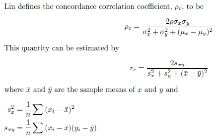

Concordance Correlation Coefficient
The concordance correlation coefficient is used to measure the agreement between two variables, specifically to evaluate reproducibility or inter-rater reliability. This quantity was proposed by Lawrence Lin to fully assess the desired reproducibility characteristics. Lin argues that this quantity should measure both the linearity of the relationship between the two variables and the degree to which this linear relationship agrees with a line with intercept 0 and slope 1.

The concordance correlation coefficient will be between -1 and 1. The coefficient will equal 1(-1) if and only if each pair of readings are in perfect agreement (perfect reversed agreement). The coefficient will equal 0 if and only if the pearson correlation coefficient is also 0. A disadvantage of this coefficient is that like others it only detects linear relationships.
-- ErinEsp - 03 Jan 2011